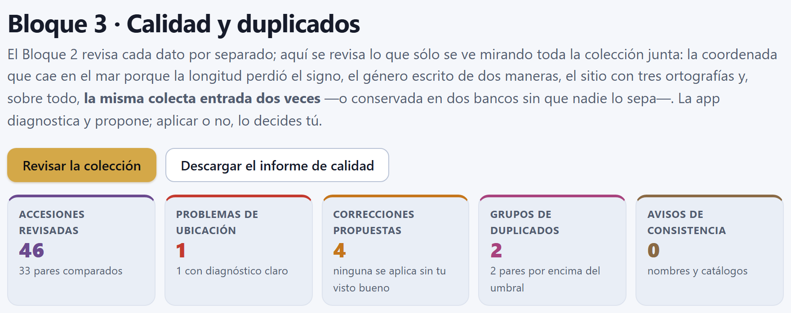
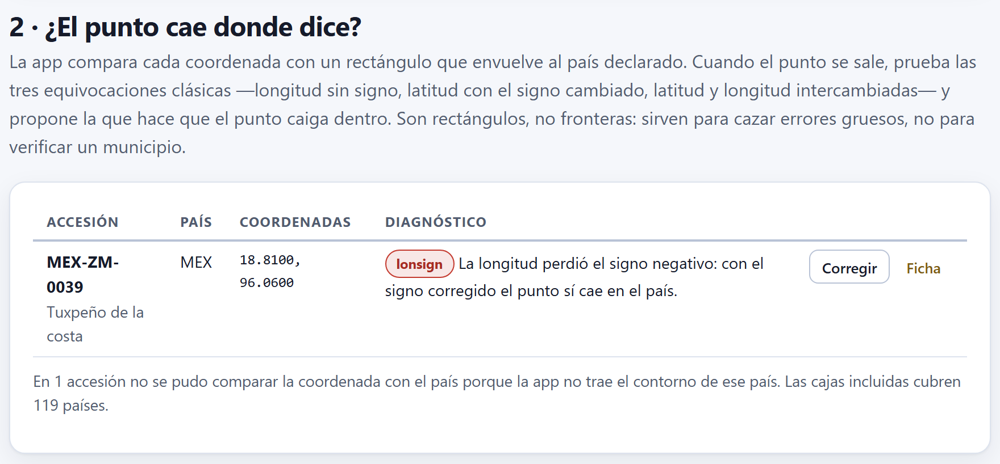
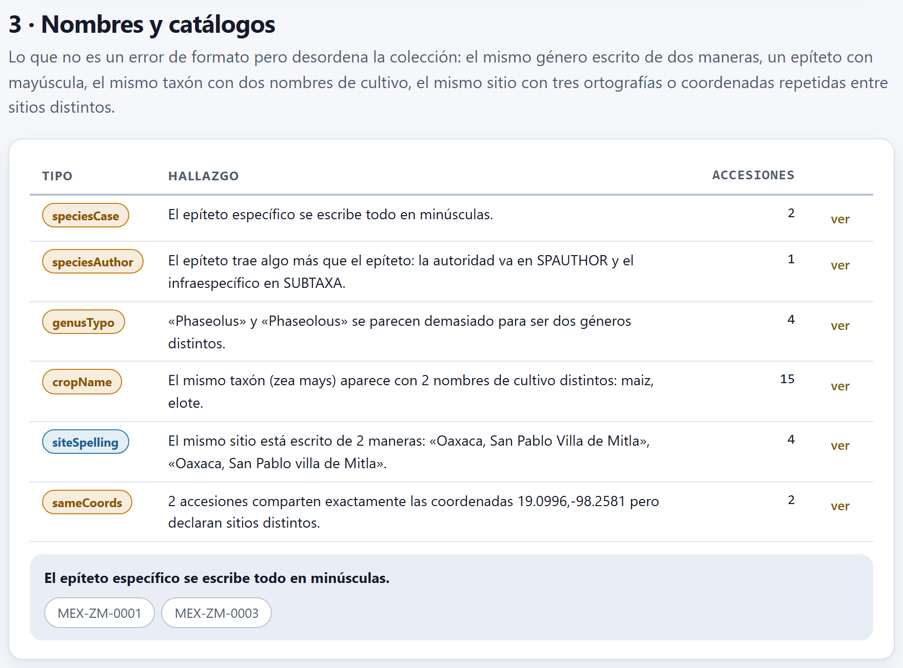
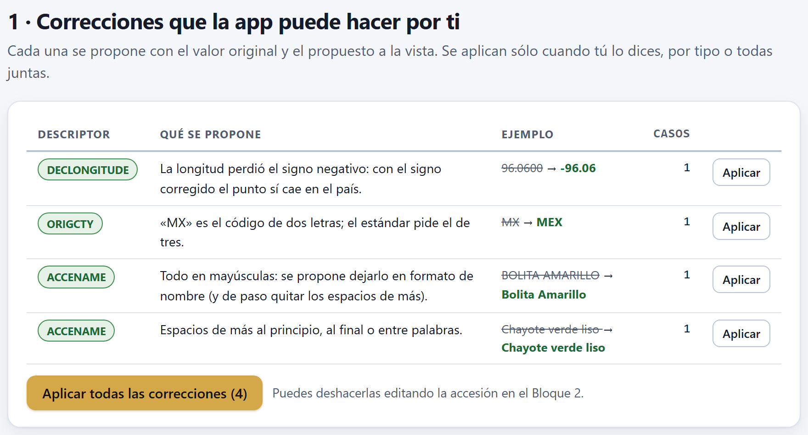
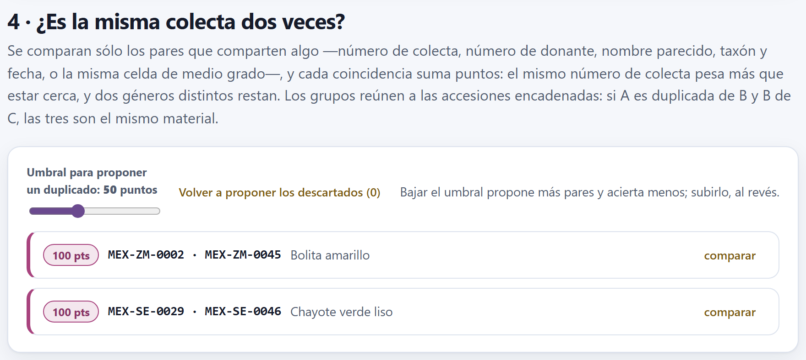
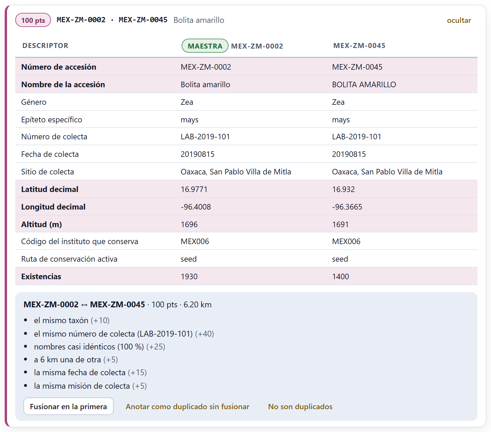
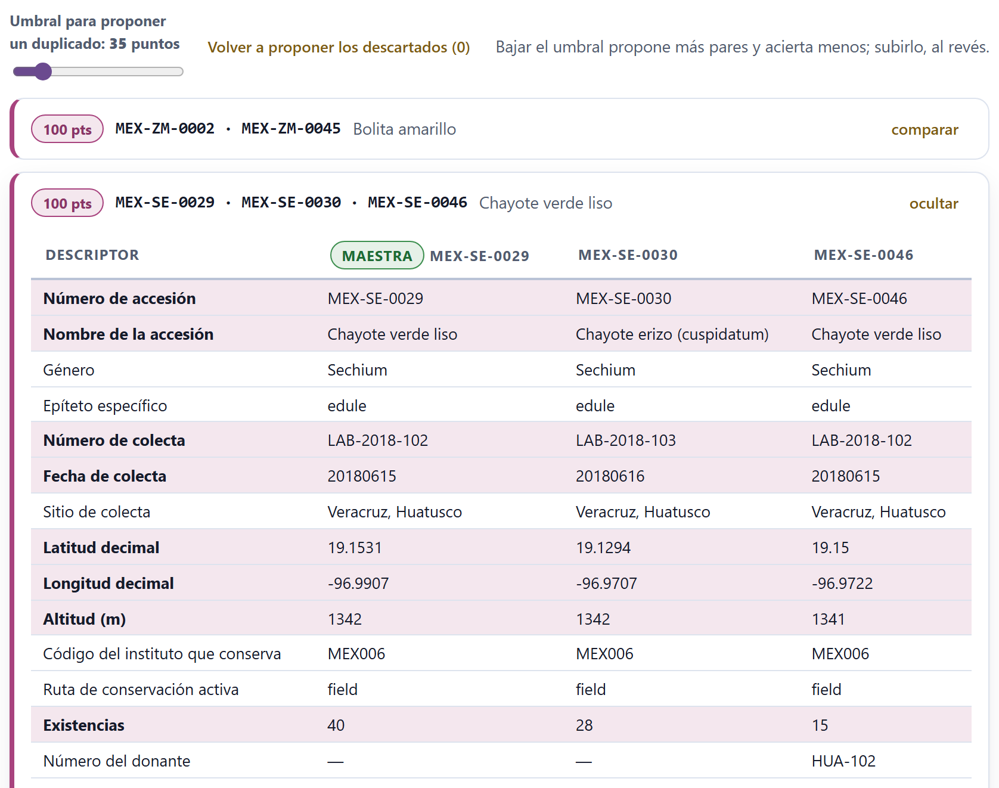
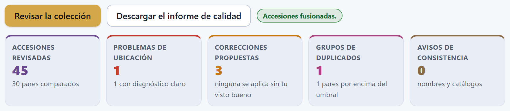

El Bloque 2 revisa cada dato por separado; el Bloque 3 revisa lo que sólo se ve mirando la colección completa: la coordenada que no cae en el país que declara la accesión, el género escrito de dos maneras, el sitio con varias ortografías y, sobre todo, la misma colecta entrada dos veces. La app diagnostica, propone la corrección y explica por qué; aplicarla, fusionar dos accesiones o descartar un par es decisión tuya.
El Bloque 3 trabaja sobre la colección que cargaste en el Bloque 2 (capítulo 2) y no pide nada más: al entrar, la revisión corre sola, con la espera animada Revisando la calidad y los duplicados, y el resultado queda en cinco recuadros y cuatro secciones. Si todavía no hay accesiones, el bloque lo dice —Primero carga tus accesiones en el Bloque 2.— y ofrece el botón Ir al pasaporte.

Dos botones gobiernan el bloque. Revisar la colección vuelve a correr toda la revisión; hace falta cuando cambiaste algo en el Bloque 2 sin salir de él, porque al volver a entrar al Bloque 3 la revisión se rehace de todos modos. Descargar el informe de calidad guarda en un archivo .csv todo lo encontrado (apartado 3.8). Junto a ellos aparece unos segundos una etiqueta verde con el resultado de lo último que hiciste: Coordenada corregida., Accesiones fusionadas., Anotado en las dos accesiones.
| Recuadro | Ejemplo | Qué cuenta |
|---|---|---|
| Accesiones revisadas | 46 | Todas las del pasaporte. Debajo, cuántos pares se compararon en la búsqueda de duplicados: 33 de los 1 035 posibles (apartado 3.5). |
| Problemas de ubicación | 1 | Los errores y avisos de la sección 2 (apartado 3.2); debajo, cuántos tienen diagnóstico claro, es decir, son errores. Las accesiones que no se pudieron comparar con su país no cuentan. |
| Correcciones propuestas | 4 | Los cambios que la app sabe hacer y espera tu visto bueno (apartado 3.4). |
| Grupos de duplicados | 2 | Los grupos de accesiones que parecen el mismo material; debajo, cuántos pares superan el umbral (apartados 3.5 y 3.6). |
| Avisos de consistencia | 0 | Los hallazgos de nombres y catálogos (apartado 3.3). |
En pantalla, las secciones van en el orden en que conviene trabajar: 1 · Correcciones que la app puede hacer por ti, 2 · ¿El punto cae donde dice?, 3 · Nombres y catálogos y 4 · ¿Es la misma colecta dos veces? Primero se limpia lo que tiene arreglo seguro y al final se decide sobre los duplicados, que es lo que más juicio pide. Este capítulo explica primero las revisiones (3.2 y 3.3), porque de ellas salen las correcciones (3.4).
De los errores puestos a propósito en la colección de ejemplo (apartado I.7), el Bloque 3 encuentra la longitud sin signo, el país de dos letras y los dos duplicados. Los demás —el 30 de febrero, la altitud de 25 000 m, el código de almacenamiento inventado, la accesión sin coordenadas y las fechas al revés— son errores de un dato aislado y los señala la validación del Bloque 2 (capítulo 2). No se pierden aquí: el informe de calidad los recoge junto con lo demás.
Cada accesión declara su país de origen en ORIGCTY y su sitio en DECLATITUDE y DECLONGITUDE. Si las dos cosas no concuerdan, una de ellas está mal, y casi siempre por una de unas pocas equivocaciones mecánicas. La app compara cada coordenada con una caja envolvente del país: el rectángulo, en grados, que va de su latitud mínima a la máxima y de su longitud mínima a la máxima. Trae las cajas de 119 países —todo el continente americano, Europa, buena parte de África y Asia, Australia, Nueva Zelanda, Papúa Nueva Guinea y Fiyi— y a cada una le da un grado de margen por lado, para no acusar a los sitios de la costa o la frontera.

La app no revisa una accesión a la que le falta la latitud o la longitud, o que las tiene escritas con algo que no es un número: de eso se encarga el Bloque 2. Con las dos coordenadas presentes, revisa en este orden:
| Etiqueta | Nivel | Qué detecta y qué dice la app |
|---|---|---|
zerozero | error | El punto (0, 0): está en el golfo de Guinea: es un campo vacío escrito como cero. No tiene corrección posible; hay que buscar la coordenada en la libreta. |
lateqlon | aviso | Latitud y longitud idénticas: probablemente se copió una sobre la otra. |
rounded | aviso | Las dos son números enteros: el sitio quedó redondeado a grados y carga más de 50 km de incertidumbre. |
nobox | nota | El país no está entre los 119: la coordenada no se compara. No cuenta como problema; se resume en una nota bajo la tabla. |
lonsign, latsign, swapped, swapsign | error | El punto cae fuera de la caja y una de las equivocaciones clásicas lo devuelve adentro (abajo). La app propone esa corrección. |
outside | aviso | El punto cae fuera y ninguna corrección simple lo arregla: hay que revisar la coordenada o el país. |
Cuando el punto se sale de la caja, la app prueba cuatro arreglos, uno tras otro, y se queda con el primero que lo devuelve al país:
lonsign): se cambia el signo de la longitud. Es la más común en América, donde todas las longitudes son negativas y el signo se pierde al pasar por una hoja de cálculo o al copiar de un GPS que escribe «W».latsign): el error simétrico, típico de los países del hemisferio sur.swapped): cada una quedó en la columna de la otra.swapsign): las dos cosas a la vez.El orden importa sólo cuando dos arreglos funcionarían, cosa rara con cajas pequeñas. Cada fila de la tabla trae el número y el nombre de la accesión, el país, las coordenadas tal como están y el diagnóstico, con dos botones: Corregir aplica en el acto la corrección propuesta (y la etiqueta verde dice Coordenada corregida.), y Ficha abre la ficha de la accesión en el Bloque 2 para que la revises o la corrijas a mano.
La caja de México va de 14.3 a 32.8 de latitud y de −118.5 a −86.6 de longitud; con el grado de margen, de 13.3 a 33.8 y de −119.5 a −85.6. Tuxpeño de la costa (MEX-ZM-0039) declara 18.8100, 96.0600: la latitud cae dentro, pero la longitud +96.06 está en el hemisferio oriental, en Birmania. La primera prueba, cambiar el signo de la longitud, da −96.06, que sí cae entre −119.5 y −85.6: diagnóstico lonsign, corrección 96.0600 → −96.06. El punto corregido queda en la llanura costera del golfo, en Veracruz.
Debajo de la tabla, la nota En 1 accesión no se pudo comparar la coordenada con el país porque la app no trae el contorno de ese país. Las cajas incluidas cubren 119 países. se refiere al frijol tépari MEX-PH-0041, que declara su país como MX. No es que México falte: MX es el código de dos letras, y las cajas usan el de tres. En cuanto apliques la corrección MX → MEX (apartado 3.4), la coordenada se compara, cae dentro y la nota desaparece.
Una caja envolvente es generosa: la de México incluye parte de Guatemala y del golfo, y la de Chile, buena parte de Argentina. Sirve para lo que se usa aquí —cazar un signo perdido o dos columnas intercambiadas, errores de cientos o miles de kilómetros—, pero no confirma que un punto esté en el municipio o en la entidad correctos. Esa revisión fina se hace sobre el mapa del Bloque 4 (capítulo 4), que dibuja las 32 entidades de México. Por la misma razón, que un punto pase esta revisión no garantiza que esté bien.
La sección 3 · Nombres y catálogos busca lo que no es un error de formato, pero desordena la colección: cosas que el Bloque 2 no puede ver porque cada dato, por separado, está bien escrito. Antes de comparar, la app normaliza los textos: quita acentos y signos, pasa todo a minúsculas y junta los espacios. Por eso «Maiz» y «Maíz» cuentan como el mismo nombre de cultivo, y en la colección de ejemplo no salta ningún aviso aunque la accesión duplicada escriba «Maiz» sin acento.
| Etiqueta | Qué busca |
|---|---|
genusCase | Un género que no va con mayúscula inicial y el resto en minúsculas (zea, ZEA). |
speciesCase | Un epíteto con alguna mayúscula (Mays). |
speciesAuthor | Un epíteto que trae algo más: un espacio o una inicial con punto, como mays L. La autoridad va en SPAUTHOR y el rango infraespecífico, en SUBTAXA. |
genusTypo | Dos géneros de la colección que se parecen demasiado para ser distintos: a una distancia de Levenshtein de 1 o 2, con al menos cinco letras el más largo. |
cropName | El mismo taxón con varios nombres de cultivo. El taxón incluye la subespecie o la variedad: el teocintle (Zea mays subsp. parviglumis) no cuenta como otro nombre del maíz. |
siteSpelling | El mismo sitio escrito de varias maneras: iguales después de normalizar, distintos tal como están. |
sameCoords | Accesiones con exactamente las mismas coordenadas (a cuatro decimales) que declaran sitios distintos: casi siempre, una coordenada copiada de la fila de arriba. |
La distancia de Levenshtein es el número mínimo de letras que hay que insertar, borrar o cambiar para pasar de una palabra a otra. De Phaseolus a Phaseolous hay una (sobra la segunda o); de Capsicum a Capcisum, dos (dos letras cambiadas de lugar cuestan dos cambios). El mínimo de cinco letras evita que dos géneros cortos y distintos, que pueden diferir en una o dos letras, se acusen entre sí.
La colección de ejemplo pasa limpia: la sección dice Los nombres científicos, los de cultivo y los sitios están escritos de manera uniforme. y el recuadro de avisos marca 0. Para la figura 3.3 se alteraron a mano seis valores, como podrías hacerlo en la ficha del Bloque 2, para que aparezca cada tipo de aviso.

Cada fila da el tipo, el hallazgo y cuántas accesiones toca. El botón ver despliega debajo la lista de esas accesiones —hasta 40— como botones; cada uno abre su ficha en el Bloque 2. Fíjate en que mays L. salta dos veces: como epíteto con mayúscula y como epíteto con autoridad. Y en el aviso del cultivo, el taxón y los nombres aparecen ya normalizados (zea mays, maiz, elote): así los comparó la app.
De todos estos avisos, sólo las mayúsculas del género y del epíteto tienen corrección automática (apartado 3.4). Los demás piden juicio: cuál de los dos géneros es el bueno, si «Elote» es un error o el nombre local que quieres conservar, cuál de las dos accesiones con la misma coordenada la tiene bien. La app te lleva a la ficha; la decisión, y la corrección, se hacen en el Bloque 2.
La sección 1 · Correcciones que la app puede hacer por ti reúne los arreglos que tienen una sola respuesta razonable. Ninguno se aplica solo: cada uno se muestra con el valor original tachado y el propuesto en verde, y se aplica cuando tú lo dices.

| Descriptor | Cuándo se propone y qué hace |
|---|---|
DECLATITUDE, DECLONGITUDE | Cuando la revisión del apartado 3.2 encontró una de las equivocaciones clásicas: el cambio de signo o el intercambio que devuelve el punto al país. |
ORIGCTY | Cuando el país viene en dos letras y la app lo conoce: lo cambia por el código de tres letras que pide el estándar. La tabla de la app tiene 56 códigos de uso común (MX, GT, PE, US, ES…, y también UK para el Reino Unido). |
ACCENAME, COLLSITE, CROPNAME | Espacios de más al principio, al final o entre palabras; o un texto escrito todo en mayúsculas, que pasa a formato de nombre —mayúscula al principio de cada palabra— y de paso pierde los espacios sobrantes. |
GENUS, SPECIES | El género con mayúscula inicial; el epíteto en minúsculas (sólo si no trae autoridad, que hay que mover a mano). |
GP_CONS | La ruta de conservación vacía cuando se puede deducir del tipo de almacenamiento (STORAGE). |
DECLATITUDE, DECLONGITUDE | La coordenada decimal vacía cuando hay una en grados, minutos y segundos (LATITUDE, LONGITUDE): la calcula, con seis decimales. |
Las propuestas se agrupan por tipo y descriptor; cada grupo muestra su primer caso como ejemplo y cuántos casos tiene. El botón Aplicar de una fila aplica todo ese grupo; Aplicar todas las correcciones (4), todas a la vez. Al aplicar, el pasaporte se guarda, la validación del Bloque 2 se rehace y la revisión del Bloque 3 vuelve a correr. Con la colección de ejemplo, después de aplicar las cuatro, los recuadros marcan 0 problemas de ubicación y 0 correcciones, y la nota del país sin caja desaparece; los dos grupos de duplicados siguen ahí, porque corregir un nombre no los separa.
El formato de nombre pone mayúscula a cada palabra: BOLITA AMARILLO pasa a Bolita Amarillo, no a Bolita amarillo, y un sitio como SAN PABLO VILLA DE MITLA quedaría San Pablo Villa De Mitla. No hay botón para deshacer: la propia app lo recuerda, Puedes deshacerlas editando la accesión en el Bloque 2. Con una colección grande, aplica por grupos, revisa los ejemplos y, si dudas, exporta antes el pasaporte (capítulo 2).
Un duplicado accidental es la misma colecta registrada dos veces en el catálogo —al digitalizar una libreta vieja, al recibir de vuelta un duplicado de seguridad, al unir dos inventarios— o la misma accesión conservada en dos bancos sin que nadie lo sepa (apartado I.3). Casi nunca está escrito igual: cambia una mayúscula, un espacio, la coordenada o el número de accesión. Por eso la app no busca filas idénticas, sino pares que se parecen en varias cosas a la vez, y cada parecido suma puntos.
Antes de todo, la app busca números de accesión repetidos. Eso no es un candidato a duplicado, es un error: si lo hay, un recuadro al principio de la sección 4 da el número y las dos filas, y recuerda que un número de accesión no se repite nunca, ni siquiera cuando el material sí es el mismo.
Comparar todos los pares crece muy rápido: 46 accesiones dan 1 035 pares, y 5 000 darían más de doce millones. La app sólo compara los pares que comparten al menos una clave de bloqueo:
COLLNUMB), normalizado y sin espacios;DONORNUMB, OTHERNUMB, separados por punto y coma);Las claves de menos de tres letras no cuentan, y una clave que comparten más de 400 accesiones se ignora, porque no distingue nada. Por ejemplo, Bolita amarillo (MEX-ZM-0002) tiene las claves lab2019101 (como número de colecta y como número), bolit, zea con la celda 17, −96.5 y zea mays con 2019-08. En la colección de ejemplo el bloqueo deja 33 pares de los 1 035: es la cifra que aparece en el primer recuadro.
| Coincidencia | Puntos | Detalle |
|---|---|---|
| El mismo número de colecta | +40 | Normalizado: «LAB-2019-101» y «lab 2019 101» coinciden. |
| Comparten un número de donante o de otra colección | +35 | Sin contar el número de colecta, que ya sumó. |
| Nombres casi idénticos | +25 | Parecido de 0.92 o más (abajo). |
| Nombres parecidos | +12 | Parecido de 0.82 a 0.92. |
| A menos de 1 km / 5 km / 25 km | +20 / +12 / +5 | Distancia haversine entre los dos puntos. |
| La misma fecha de colecta | +15 | Fecha completa de ocho cifras; si sólo coincide el año, +5. |
| El mismo taxón | +10 | Mismo género y epíteto. |
| La misma misión de colecta | +5 | COLLMISSID. |
| Géneros distintos | −35 | Casi seguro no son la misma cosa; sustituye a la suma del taxón. |
Los pesos dicen qué tan fuerte es cada indicio. Un número de colecta lo asigna quien colecta, uno por muestra: que coincida es casi una firma. Estar cerca, en cambio, es débil: en una misma comunidad se colectan muchas muestras distintas. Ningún indicio basta solo para pasar el umbral de 50 puntos; hacen falta dos o tres juntos.
Para comparar los nombres, la app los normaliza (sin acentos, mayúsculas ni signos: Tuxpeño y TUXPENO quedan iguales) y calcula dos medidas, de las que se queda con la mayor: la similitud de Jaro-Winkler entre las dos cadenas, y una medida por palabras, 0.55 + 0.45 × la proporción de palabras compartidas (índice de Jaccard), que sólo cuenta si comparten al menos una palabra. La segunda rescata nombres con palabras de más o de menos: Chayote verde liso y Chayote verde.
La similitud de Jaro cuenta las letras que coinciden entre dos cadenas a y b dentro de una ventana —una letra de a sólo se empareja con la misma letra de b si está a lo más a ⌊máx(|a|, |b|)/2⌋ − 1 posiciones—, y las transposiciones t: la mitad de las letras emparejadas que quedan en distinto orden. Con m letras emparejadas:
Winkler agregó un premio al prefijo común, porque en los nombres los errores rara vez están al principio: ℓ es el número de letras iniciales iguales (hasta 4) y p = 0.1. La app sólo aplica el premio si J ya es de 0.7 o más, para no acercar cadenas que no se parecen.
| |a| = |b| = 6 · ventana = ⌊6/2⌋ − 1 = 2 posiciones | |
| M-A-R se emparejan en su lugar; T (posición 4 de a) encuentra la T de b en la posición 5; H (5) encuentra la H de b en la 4; A con A → m = 6 | |
| en orden, a da M A R T H A y b da M A R H T A: dos letras fuera de orden → t = 2/2 = 1 | |
| J = (6/6 + 6/6 + 5/6) / 3 = 0.9444 | prefijo común M-A-R → ℓ = 3 |
| JW = 0.9444 + 3 × 0.1 × (1 − 0.9444) = 0.9444 + 0.0167 = 0.9611 | |
La función de la app da 0.9611. Si fueran dos nombres de accesión, el par sumaría los 25 puntos de nombres casi idénticos (96 %). Con las mismas reglas, bolita amarillo y bolita amarilla dan 0.973, y Chayote verde liso y Chayote erizo (cuspidatum), 0.87: nombres parecidos, 12 puntos.
Entre dos puntos de la Tierra, con latitudes φ1, φ2 y longitudes λ1, λ2 en radianes, la distancia por la superficie de una esfera de radio R es:
La app usa R = 6 371.0088 km, el radio medio de la Tierra. Tratar la Tierra como esfera produce errores de alrededor de 0.5 %, irrelevantes para decidir si dos colectas están a 1, 5 o 25 km. A diferencia de restar grados, la fórmula toma en cuenta que un grado de longitud mide menos lejos del ecuador.
MEX-ZM-0002 está en 16.9771, −96.4008 y MEX-ZM-0045 en 16.932, −96.3665.
| Δφ = −0.0451° = −0.00078714 rad | Δλ = 0.0343° = 0.00059865 rad |
| sin²(Δφ/2) = 1.5490 × 10−7 | cos φ1 cos φ2 = 0.95642 × 0.95665 = 0.91497 |
| sin²(Δλ/2) = 8.9595 × 10−8 | a = 1.5490 × 10−7 + 0.91497 × 8.9595 × 10−8 = 2.3687 × 10−7 |
| d = 2 × 6 371.0088 × arcsen(4.8670 × 10−4) = 2 × 6 371.0088 × 4.8670 × 10−4 = 6.2015 km | |
La app escribe 6.20 km en la cabecera del par y suma 5 puntos, porque la distancia queda entre 5 y 25 km.
Los pares que llegan al umbral se reúnen en grupos por transitividad: si A se parece a B y B a C, las tres forman un grupo aunque A y C no lleguen al umbral entre sí.

Cada grupo es una tarjeta con el puntaje más alto de sus pares, los números de sus accesiones en el orden del pasaporte, el nombre de la primera y el botón comparar. Con la colección de ejemplo y el umbral de fábrica salen 2 grupos y 2 pares, los dos duplicados sembrados, ambos con 100 puntos. El del maíz suma exactamente 100: el mismo taxón (+10), el mismo número de colecta LAB-2019-101 (+40), nombres casi idénticos (+25: después de normalizar, BOLITA AMARILLO y Bolita amarillo son iguales), 6.2 km (+5), la misma fecha (+15) y la misma misión (+5). El del chayote suma 102 —el mismo taxón, número de colecta LAB-2018-102, nombre, 1.97 km (+12) y fecha— y se recorta a 100.
comparar abre la tarjeta (y ocultar la cierra). Arriba, una tabla pone las accesiones en columnas, con la primera marcada como maestra, y en filas hasta quince descriptores: número y nombre de la accesión, género, epíteto, número, fecha y sitio de colecta, latitud, longitud, altitud, instituto que conserva, ruta de conservación, existencias, otros números y número del donante. Las filas vacías en todas las accesiones se omiten; las que difieren se resaltan en rosa con el nombre en negritas, para que veas de un vistazo en qué no coinciden.

Debajo van los pares del grupo, uno por recuadro: los dos números, el puntaje, la distancia y la lista de razones, cada una con sus puntos entre paréntesis. Cada par lleva sus tres botones de decisión (apartado 3.7). La razón de la distancia redondea según su tramo —a 6 km una de otra— mientras la cabecera da la distancia con dos decimales.
El deslizador Umbral para proponer un duplicado va de 25 a 95 puntos, de 5 en 5, y empieza en 50. Al soltarlo, la revisión vuelve a correr; el valor se guarda en el navegador para la próxima vez. La propia app resume el compromiso: Bajar el umbral propone más pares y acierta menos; subirlo, al revés.
| Umbral | Pares | Grupos | Qué entra |
|---|---|---|---|
| 40 a 95 | 2 | 2 | Sólo los dos duplicados sembrados (100 puntos). |
| 35 | 4 | 2 | El tercer chayote de Huatusco, MEX-SE-0030, con 39 puntos frente a cada uno de los otros dos: se une a su grupo. |
| 30 | 5 | 3 | Además, dos maíces de la misma misión con nombres parecidos (32 puntos). |
| 25 | 8 | 5 | Tres pares más, de 25 a 27 puntos: mismo taxón con nombre parecido o cercanía. |

La figura 3.7 muestra el riesgo de la transitividad con un umbral bajo. El chayote erizo suma 39 puntos con cada chayote verde liso —el mismo taxón (+10), nombres parecidos al 87 % (+12), a 3.4 y 2.3 km (+12) y el mismo año (+5)— y queda en el grupo, aunque es otra colecta, de otro día, y en su pasaporte es otra variedad (SUBTAXA var. nigrum spinosum, un descriptor que el puntaje no mira). Por eso la decisión se toma par por par: aquí se descartarían los dos pares de 39 puntos con No son duplicados y se resolvería sólo el de 100.
Cada par tiene tres salidas. Ninguna es automática, y las tres cambian lo que la app propone después.
Fusionar en la primera convierte las dos accesiones en una. Antes, la app pide confirmación: Se fusionará MEX-ZM-0045 dentro de MEX-ZM-0002 y la segunda desaparecerá del catálogo. ¿Seguir? La «primera» es la que va antes en el pasaporte —por lo general la que entró primero al catálogo— y es la maestra. Las reglas de la fusión son tres:
OTHERNUMB de la maestra, para que cualquier etiqueta, publicación o vale que lo cite se pueda rastrear.
Con la colección de ejemplo, MEX-ZM-0002 queda con 1 930 + 1 400 = 3 330 semillas, con MEX-ZM-0045 en sus otros números, y conserva su nombre, su coordenada, su cultivo «Maíz» y su observación Raza Bolita.; la observación de la absorbida, que explicaba cómo había entrado otra vez al catálogo, no pasa, porque la maestra ya tenía la suya. La fusión no tiene botón para deshacerla: si dudas, exporta antes el pasaporte (capítulo 2).
Sumar existencias supone que los dos lotes están en el mismo estado. Si uno se probó hace un año con 89 % de germinación y el otro tiene otra fecha, la maestra conserva sólo su prueba: revisa en el Bloque 8 (capítulo 8) si conviene volver a probar el lote unido. Y si los dos registros son en realidad el mismo material en dos bancos distintos, no fusiones: anótalo.
Anotar como duplicado sin fusionar deja las dos accesiones en el catálogo, pero hace constar el vínculo en ambas: cada una recibe el número de la otra en OTHERNUMB y una frase en REMARKS —en el ejemplo, Duplicado declarado de MEX-SE-0046. y Duplicado declarado de MEX-SE-0029.—. Es la salida para la misma colecta conservada en dos instituciones, o para dos lotes que decides mantener separados. El par deja de proponerse.
No son duplicados descarta el par sin tocar el pasaporte. El descarte —igual que el de un par anotado— se guarda en el navegador y sobrevive a cerrar la app, así que el par no vuelve a molestar. El botón Volver a proponer los descartados lleva entre paréntesis cuántos hay y los devuelve todos a la vez. Con la colección de ejemplo, después de fusionar el maíz y anotar el chayote, el recuadro de grupos marca 0 y el botón dice (1). Ojo: la app recuerda cada descarte por la posición de las dos accesiones en el pasaporte; si cargas otra colección o borras accesiones en el Bloque 2, un descarte viejo puede caer sobre otro par, así que al cambiar de colección conviene pulsar ese botón.
Descargar el informe de calidad guarda informe-calidad.csv, en UTF-8, con una fila por hallazgo y cinco columnas: tipo, nivel, accesion, campo y detalle. Reúne lo que encontró el Bloque 3 y, al final, lo que encontró la validación del Bloque 2, así que es la lista completa de pendientes de la colección en un solo archivo, para trabajarla en una hoja de cálculo o adjuntarla a un informe.
| tipo | Filas | nivel · accesion · campo |
|---|---|---|
geografia | 2 | error, warn o info · la accesión · el descriptor revisado (apartado 3.2). |
consistencia | 0 | warn o info · todas las accesiones del hallazgo, separadas por espacios · la etiqueta del aviso (apartado 3.3). |
correccion | 4 | fix · la accesión · el descriptor; el detalle trae «antes → después» y el motivo (apartado 3.4). |
duplicado | 2 | el puntaje · las dos accesiones unidas con «+» · la distancia en km, con un decimal; el detalle, las razones (apartado 3.5). |
pasaporte | 29 | error o warn · la accesión · el descriptor: los 3 errores y 26 avisos de la validación del Bloque 2 (capítulo 2). |
| tipo | nivel | accesion | campo | detalle |
|---|---|---|---|---|
| geografia | error | MEX-ZM-0039 | DECLONGITUDE | La longitud perdió el signo negativo… |
| geografia | info | MEX-PH-0041 | ORIGCTY | La app no trae el contorno de MX… |
| correccion | fix | MEX-PH-0041 | ORIGCTY | MX → MEX · «MX» es el código de dos letras… |
| duplicado | 100 | MEX-ZM-0002 + MEX-ZM-0045 | 6.2 km | el mismo taxón; el mismo número de colecta (LAB-2019-101); … |
| duplicado | 100 | MEX-SE-0029 + MEX-SE-0046 | 2 km | el mismo taxón; el mismo número de colecta (LAB-2018-102); … |
| pasaporte | warn | MEX-ZM-0001 | DUPLSITE | Sin duplicado de seguridad: la accesión depende de una sola instalación. |
El informe retrata la colección en el momento de descargarlo: los pares descartados o anotados no aparecen, y lo que ya corregiste tampoco. Si lo vas a entregar, descárgalo al final, después de aplicar correcciones y resolver duplicados, o descarga uno antes y otro después para documentar la limpieza.
| Lo que ves | Por qué pasa y qué hacer |
|---|---|
| Primero carga tus accesiones en el Bloque 2. | No hay pasaporte. Pulsa Ir al pasaporte y carga tu colección o la de ejemplo (capítulo 2). |
| Una accesión sin coordenadas no aparece en la sección 2 | Sin latitud o longitud no hay nada que comparar con el país. El Bloque 2 la señala. |
| La nota dice que una accesión no se pudo comparar | Su país no está entre los 119, o viene escrito en dos letras. Aplica la corrección de ORIGCTY si la hay; si el país no está, revisa el punto en el mapa del Bloque 4. |
| Un punto obviamente mal ubicado no sale como problema | Cae dentro de la caja del país, aunque sea en el estado equivocado: las cajas son rectángulos con un grado de margen. Revísalo en el Bloque 4. |
| Un duplicado que conoces no aparece | No comparte ninguna clave de bloqueo, no llega al umbral o lo descartaste antes. Baja el umbral o pulsa Volver a proponer los descartados. |
| Un grupo reúne accesiones que no son la misma | Entraron por transitividad. Abre el grupo y descarta, par por par, los que no lo son. |
| Desapareció un par que no habías resuelto | Un descarte guardado de otra colección cayó sobre él (apartado 3.7). Pulsa Volver a proponer los descartados. |
| Fusionaste el par equivocado | No hay deshacer. Recupera la accesión del pasaporte que exportaste antes, o vuelve a capturarla en el Bloque 2 con el número que quedó en OTHERNUMB de la maestra. |
| Si un punto tiene diagnóstico de signo o de intercambio | entonces acepta la corrección si el sitio corregido concuerda con COLLSITE; si no, abre la ficha y busca la coordenada en la libreta. |
| Si una corrección es de forma (país en dos letras, espacios, mayúsculas) | entonces aplícala por grupo después de mirar el ejemplo; cuida los nombres que deben conservar minúsculas. |
| Si aparece un aviso de nombres o de sitio | entonces decide cuál forma es la buena y corrígela en la ficha del Bloque 2. |
| Si un par coincide en número de colecta, fecha y taxón | entonces es la misma colecta: fusiónala si está en tu banco dos veces; anótala si está en dos bancos. |
| Si un par sólo se parece en nombre, cercanía o año | entonces compáralo con calma y, si el número o la fecha de colecta difieren, márcalo como No son duplicados. |
| Si vas a analizar o entregar la colección | entonces resuelve antes todos los grupos y descarga el informe de calidad al final. |
Lo que se corrige, fusiona o anota en el Bloque 3 queda en el pasaporte: el Bloque 2 lo muestra y los bloques 4 a 10 lo toman al abrirse.